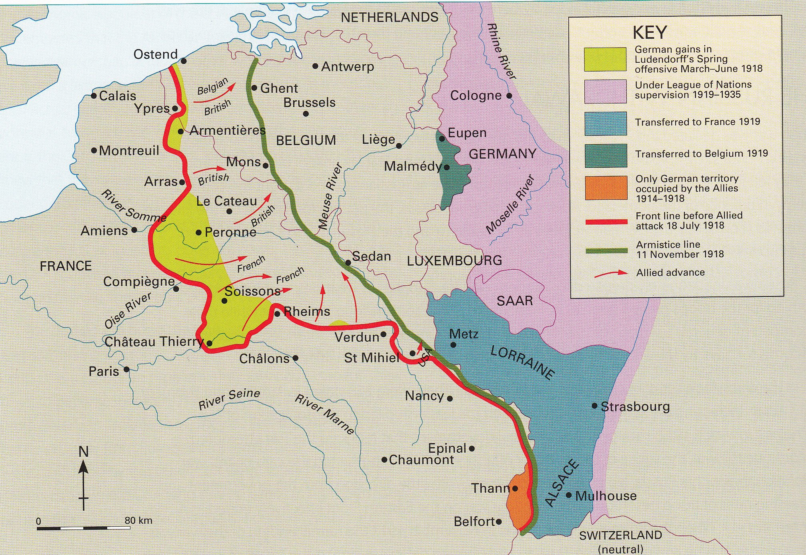
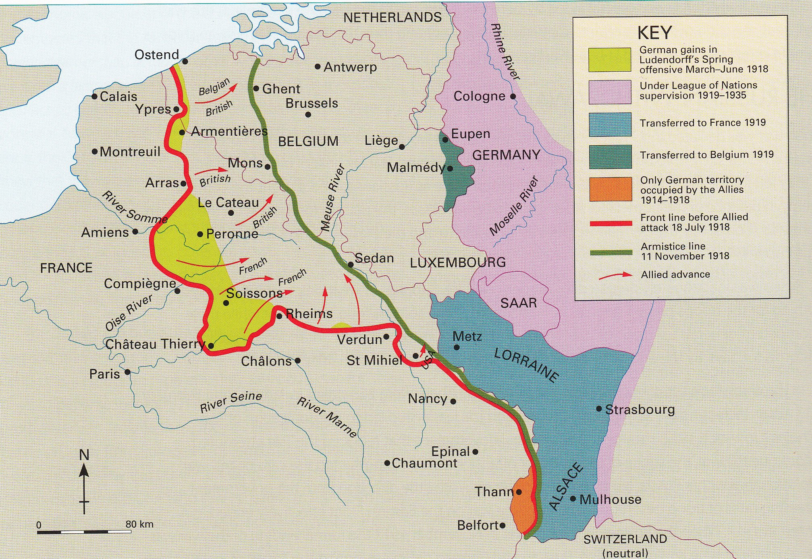

IF YOU CAN SEE THIS TEXT, YOU NEED TO ENABLE JAVASCRIPT FOR MANY FUNCTIONS OF THIS SITE
 
Spring Offensive and the Allied Offensive: The United States joining of the war, caused fear in the German military leadership. The arrival of their fresh troops would most likely result in a defeat for the empire. So they came up with one last attempt to win the war. The Spring Offensive, or the Kaiserschlacht. On March 21st the offensive would begin and would have the largest advances in troop movement since the start of the war. German soldiers did various diversions and assaults causing distractions to the Entente forces. Storm troopers or specially trained troops for raids against trenches were deployed during this offensive. The Germans had great initial success and various victories but they ran out of fuel, their supply lines could not get out that far and many soldiers were ill-equipped. The arrival of the United States Army would result in another offensive in the other direction.

Spring Offensive and the Allied Offensive: The United States joining of the war, caused fear in the German military leadership. The arrival of their fresh troops would most likely result in a defeat for the empire. So they came up with one last attempt to win the war. The Spring Offensive, or the Kaiserschlacht. On March 21st the offensive would begin and would have the largest advances in troop movement since the start of the war. German soldiers did various diversions and assaults causing distractions to the Entente forces. Storm troopers or specially trained troops for raids against trenches were deployed during this offensive. The Germans had great initial success and various victories but they ran out of fuel, their supply lines could not get out that far and many soldiers were ill-equipped. The arrival of the United States Army would result in another offensive in the other direction.

The Hundred Day Offensive, was the Allied counter attack. It started it at the battle of Amiens where the Allied forces would surprise the Germans with various flank attacks. They were able to take many prisoners along with gaining ground. The battlefields of Ypres and the Somme would be revisited during this offensive. The United States would have their largest operation during this time in the Meuse-Argonne Offensive which lasted until the end of the war. The Allied Forces broke through the Hindenburg line and continued forward. Germany was in complete collapse due to these defeats and would sign an armistice on November 11, 1918 at 11 am. The war was over, and peace treaties would begin shortly after.